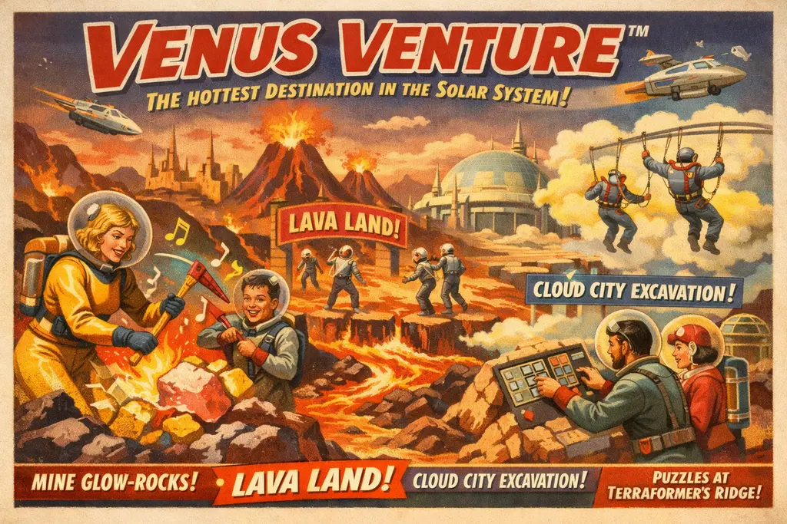

Mohjang’s Grand Experiment

THE FIRST THEME PARK IN HUMAN HISTORY WHERE VISITORS ACCIDENTALLY TERRAFORM AN ENTIRE PLANET
By Amthonie Vandenberg, Senior Interplanetary Correspondent
MOHJANG ORBITAL HQ — In a development that caused several senior officials at the Interplanetary Planning Directorate to quietly abandon their weekend plans, Mohjang Interplanetary Enterprises has revealed that its newest attraction — Venus Venture™ — is not merely an “immersive geological adventure”, but in fact a fully operational mining and terraforming facility. While guests enthusiastically smash glowing rocks, shoot mist‑creatures and solve “atmospheric puzzles”, they are unknowingly performing industrial labour of considerable strategic value. Mohjang insists this is “a delightful synergy between recreation and planetary stewardship”, though the precise nature of the delight remains unclear.
Venus Venture™ is marketed as “the hottest destination in the solar system”, a slogan that is technically accurate and therefore difficult to challenge. The park is perched atop iridium‑rich plateaus, where visitors are encouraged to “mine” Glow‑Rocks™ using brightly coloured pickaxes. These tools, described in promotional materials as “fun, responsive and ergonomically delightful”, are in fact equipped with micro‑refinement units that sort and package valuable minerals for orbital transport. Guests appear unaware of this, largely because the devices emit cheerful jingles whenever a particularly lucrative vein is struck.
The park itself is divided into several zones, each designed to disguise industrial processes as wholesome entertainment. LavaLand™ invites families to compete in “volcanic challenges”, which coincidentally correspond to Mohjang’s most profitable extraction sites. Cloud City Excavation™ suspends visitors in buoyant harnesses while they “clear the skies” of sulphuric mist, a task that significantly improves atmospheric stability. Terraformer’s Ridge™ presents itself as a puzzle‑based escape experience, though the solutions are immediately uploaded to Mohjang’s climate‑control systems, where they are used to optimise circulation algorithms.
Observers have noted that Mohjang has effectively invented a new category of colonisation: recreational terraforming. By packaging planetary exploitation as a family outing, the company has managed to secure a steady stream of unpaid labourers who not only work enthusiastically, but also purchase commemorative merchandise. Mohjang denies any suggestion of manipulation, stating that “every participant contributes voluntarily to humanity’s future”. The fact that this future appears to be heavily branded is, according to the company, “pure coincidence”.
Since Leon Sumk declared Mars his personal property — a claim still under review by several bewildered legal bodies — humanity has been forced to consider less fashionable planets. Venus, long dismissed as inhospitable, has become unexpectedly viable thanks to Mohjang’s efforts. The company asserts that the planet will be “comfortably habitable” within a few decades, provided visitors continue to arrive in sufficient numbers and maintain their enthusiasm for hitting things with pickaxes.
Whether Venus Venture™ represents visionary innovation or a particularly flamboyant form of corporate opportunism remains a matter of debate. What is certain is that Mohjang has established a precedent: theme parks that quietly perform infrastructural megaprojects. It is only a matter of time before other companies follow suit, and humanity begins to wonder why its favourite attractions are suspiciously aligned with resource‑rich geological formations.